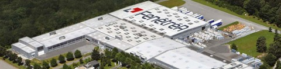
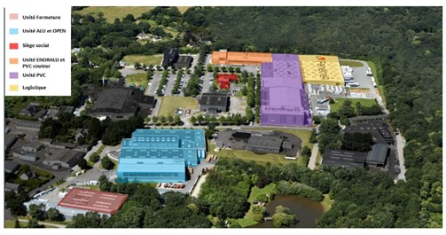
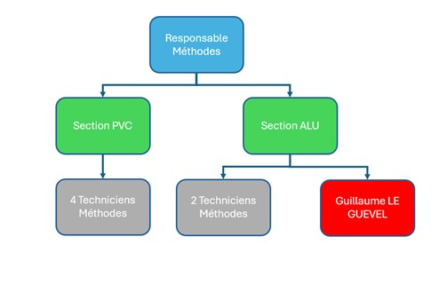

FenêtréA est une entreprise familiale de menuiseries sur mesure basée dans le parc d'activités du Chênot à Beignon (Morbihan), à l’ouest de Rennes.
Née en 1993 sous le nom de FMPB (Fabrication menuiseries plastiques Beignonnaise), l’entreprise est rachetée en 2006 et renommée « FenêtréA ».
En 2007, la gamme aluminium est lancée. Entre 2010 et 2016, la forte demande entraîne de nombreux agrandissements des ateliers et plateformes logistiques. En 2018, la gamme de portes OPEN voit le jour, suivie d’une stratégie de digitalisation en 2019.
Aujourd’hui, FenêtréA compte environ 500 collaborateurs et intérimaires, et génère un chiffre d’affaires proche de 85 millions d’euros.
L’entreprise est implantée à Beignon sur la zone industrielle du Chênot. Elle comprend 6 bâtiments sur 5,5 hectares. Le siège social est situé face à l’atelier PVC.
Le site comprend :
| Catégorie | Types | Matériaux | Particularités |
|---|---|---|---|
| Fenêtres | - Standard - Cintrées - Hybrides (PVC/Alu) |
PVC, Aluminium, PVC/Alu | Large choix de teintes, sur-mesure… |
| Portes | - Porte Open - Porte Phare - Porte Technique |
PVC, Aluminium, PVC/Alu | Design personnalisable, inspiration bretonne |
| Volets | - Roulants - Battants |
PVC, Aluminium | Fonctionnels, esthétiques et automatisés |
| Innovation | Produits connectés | Tous (via partenariats domotiques) | Pilotage à distance, sécurité renforcée (NFC, empreinte) |
Le service méthodes est un maillon essentiel entre le bureau d’étude et les équipes de production. Il transforme les exigences du produit (normes, spécifications, contraintes) en processus opérationnels : outillage, équipements, ressources humaines.
Il vise également à améliorer l'existant : réduire les gaspillages, augmenter l'efficacité, améliorer l'ergonomie, et renforcer la compétitivité globale.
Ses principales missions :
Organigramme :
